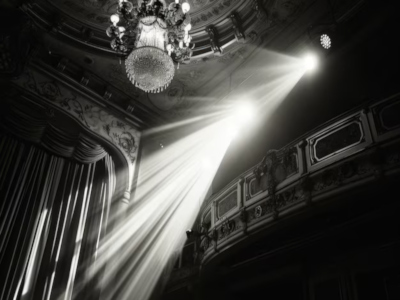
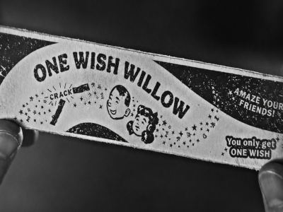

LUZES
A iluminação transforma cada cena em uma experiência única. A intensidade, a direção e a cor de cada fonte de luz influenciam a percepção do espectador, destacando personagens, ambientes e emoções. Cada escolha visual reforça a narrativa e cria atmosferas marcantes para o público.
CÂMERA
A iluminação transforma cada cena em uma experiência única. A intensidade, a direção e a cor de cada fonte de luz influenciam a percepção do espectador, destacando personagens, ambientes e emoções. Cada escolha visual reforça a narrativa e cria atmosferas marcantes para o público.
SOM
O som é um elemento essencial da linguagem cinematográfica, responsável por ampliar as emoções e dar vida às cenas. Diálogos, efeitos sonoros, musicas e momentos de silêncio influenciam a percepção do espectador, reforçando a narrativa e tornando cada sequência mais envolvente.

AÇÃO
Representa tudo o que acontece diante da câmera e conduz o ritmo. Os movimentos dos personagens, as expressões, os gestos e as interações tornam cada cena mais dinâmica. Cada acontecimento desperta emoções, prende a atenção do público e fortalece a experiência cinematográfica.